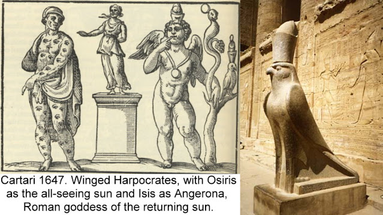

Lovers
Love and Marriage
The Lover or Lovers card, as it has been known since the 17th century, was in the earliest lists just "Love". The card survives in two early Lombard decks, the Cary-Yale of the 1440s (left below) and Pierpont-Morgan-Bergamo of the 1450s (center), as well as the "Charles VI' deck of a little later, the 1460s or 1470s, probably of Florence, but perhaps Bologna or Ferrara (right).
The two Lombard cards are much alike: a man and a woman shake hands, with Cupid overhead (For the Cary-Yale: Beinecke Library, http://beinecke.library.yale.edu/dl_crosscollex/, then "Visconti" or "Cary Sheet" For the Visconti-Sforza, Dummmet, The Visconti-Sforza tarot cards). The CYs handshake is that of the marriage contract, with heraldic emblems of the two families above them. They might be those of Pavia, for the groom, and Visconti, for the bride, and the marriage that of Francesco Sforza and Bianca Maria Visconti, legitimated daughter of the Duke of Milan.
The Viscontis' heir-apparent was traditionally the Count of
Pavia. Even though Sforza was only a Viscount, the flag of Pavia might
have been to get Sforza's hopes up, even if in the end, Visconti had
other intentions. On the other hand, the banners might commemorate some
other marriage, between a Visconti duke and a daughter of the duke of
Savoy, as had happened twice in the history of the dynasty and would
happen again. The word "LOVE" can be seen on the tent. The dog is a
symbol of faithfulness.
In the PMB, Cupid is older than in the earlier Cary-Yale, and so perhaps the couple, renewing their vows, perhaps. In
the Charles VI the love being celebrated seems less serious and more
romantic, simply people following their instincts. In another early version, c. 1500, the man seems to be swearing an oath of fealty. The
arrow in the breast of the lady is reminiscent of similar arrows in
Petrarch's heart, doomed to love the recalcitrant Laura, who in
Petrarch's poetry pledges herself to eternal chastity.
In the sequence as it appeared in Florence, the next card will be Temperance: one must learn to control the appetites with the virtue of self-control. In the sequence in Ferrara, Temperance is first, then Love: that is to say, when one has learned Temperance, then one may experience Love safely. In Milan the next in the order was Justice: it is the contract that allows for chastity within moral bounds, the chastity of sex within the sanctity of marriage. Each side binds itself to the other, with duties to fulfill. For men, the principal one is to provide for the family and be a good father; for women, it is the duty to be a good mother to the man's children and to obey her husband, with no cause for disgrace due to infidelity or even flirtatiousness or immodest dress. If that makes for a double standard, that is the way it was. Of course the instinct by itself will not confine itself to such bounds. That is the function of Temperance and the marriage contract.
The Schoen horoscope adds a priest, as though to say, it is time we made
the theme of marriage explicit! This image is for the 7th house, that
of partnerships and contracts. (Schoen zodiac: Ernst and Johanna Lerner, Astology and Astronomy: a pictorial archive of signs and symbols. Vieville: Heron. Contracts: http://en.wikipedia.org/wiki/House_(astrology)). Love is a serious business: Cupid is
absent. Vieville's version appears to represent the same scene, now with Cupid. An older
figure, male as nearly as we can tell, puts his hand on a young man's
shoulder, while he clutches his belt, and the young woman beside him (or
perhaps another man) puts her hand on his heart. (3)
De Gebelin in 1781 saw the card in terms of an ancient Roman tomb painting in which a youth, Amor is between two older figures, representing the mother and the father, with the whole as the "Image of Faithfulness." (Karlin, Rhapsodies of the Bizarre, p. 21). In the 16th century this image appears in both Alciato and Cartari emblem-books. Cartari's comment next to the engraving says that the wreathed woman is the mother, Truth; the father is Honor; and Love is their bond. (Cartari, Images of the gods of the ancients, 1647 edition, p. 84. Long leaves as honor: p. 218)
In the tarot, from this perspective, the father, with the leaves, has been changed to an older woman, the mother to the young woman, and Love is divided into two, Cupid and the Lover. That is a bit of a stretch! Yet the older woman with the leaves does look maternal, as though the lovers must be sanctioned by family, even more than by a priest.
In Greco-Roman mythology Cupid was the son of Mars and Venus, but not as the result of any marriage: Venus was already married to Vulcan. The hieros gamos, or sacred marriage, was that between Jupiter and Juno, whose offspring were Mars and Bellona, god and goddess of war. A close correspondence would be to the Egyptian Osiris and Isis, whose offspring was the warrior Horus, who took the form of a hawk. It is hard to say whether anyone would have made such an interpretation of the tarot card figures in the 16th-17th centuries, but the gods of ancient Egypt were quite fashionable at that time. Cartari has an image of Isis, Osiris and Carpocrates (a Greek term for the younger Horus, for which see Plutarch: Of Isis and Osiris XIX, at http://thriceholy.net/Texts/Isis.html); notice the wings on the child and the bird next to him with similar headgear, which in turn can be compared to the hawk representing Horus at his temple at Edfu, a short distance from the Nile. Such images of Horus were surely known by the time of the Cartari image, 1647.
In Cartari's caption, Isis is called Angerona, goddess of the returning sun, because Harpocrates' birthday was celebrated at the Winter Solstice (Cartari 1647, p. 198). Carpocrates was one of several precursors to Christ, whose feast days Christianity co-opted. Both he and the hawk-god and hero Horus were seen by the Greeks as equivalent to Apollo, the sun god, appropriate for the sunburst behind the child on the cards.
For the sunburst, besides an assimilation to a solar deity, another interpretation would be in terms of the Eros of the Orphics, of whom the Orphic Hymns declared:
First (I have sung) the vast necessity of ancient Chaos,
And Cronus, who in the boundless tracts brought forth
The Ether, and the splendid and glorious
Eros of a two-fold nature,
The illustrious father of night, existing from eternity.
Whom men call Phanes... (http://www.sacred-texts.com/cla/af/af10.htm)
Phanes is Greek for "light-bringer," a suitable epithet for who is the center of intense rays of light. This "Phanes" was also an epithet of Dionysus himself, probably because Eros was considered the first incarnation of the god later born as Dionysus. In this role, too, Dionysus has his epithet Hues, god of moisture and fertility. Aside from being the protector of agriculture, his particular product was wine, the lubricator of procreation. Cartari says that the ancients called Priapus the son of Venus and Dionysus because sexual love results from the combination of beauty and wine. Cartari also quotes the saying that Venus can do nothing without Bacchus; indeed, another of his epithets is Phallen. (4)
His followers, for some of the time under the master's guidance, produced the following other meanings for the card, upright and reversed (I have combined two lists below):
[Mariage.] MARRIAGE (13)—Union, Meeting, Joining, Assembling, Bond, Alliance, Vow, Oath, Intimacy, Copulation, Coupling, Chain, Slavery, Financial Straits [Gene; Stockman has “discomfort or difficulty “], Captivity, Servitude.
Reversed: [Union.] UNION. Society, Contacts, Concubinage, Adultery, Incest, Alloy, Blending, Mixture, Compounding.—Peace, Concord, Accord, Harmony, Correct [Good] Understanding [bonne intelligence; Stockman has “good terms”]. Reconciliation, Patching up.
We see more than union in the Uprights: there is a Vow or Oath, as in marriage. Such a contract can also be a form of captivity if one person dominates without the consent of the other. The reverseds have terms that could apply to metals or chemicals as much as to people; to me this suggests consciousness of an alchemical analogy.
The emblem-writers, in fact, were not adverse to such an interpretation. The mythologist Natale Conti wrote a compendium of stories about the gods in 1551, entitled Mythologies.
In it he includes what he specifically calls an alchemical
interpretation of Juno. He calls her "water of Mercury," and says, among
other things,
She is in charge of marriages because "she is the means for conjoining the sulphuric vapors, Venus and Mars, as it were, and because before the distilling process, she is joined with Jove, and the two together engender the alchemical Sun, hence her being called the wife of Jove. She is the queen of the Gods because she controls, dissolves, joins, separates and constrains the metals, which are named after various Gods. (Anthony DiMatteo, Natale Conti's Mythologies, A select translation, p. 81)
Here again we see Juno, the older woman on the card, depicted as that which brings about the transformation of others, in this case envisioned as vapors and metals, in other words their initiator into higher stages of development. As for the "alchemical Sun" engendered by this Jupiter and Jove, the myth would have predicted Mars; but now it appears to be the sun-god, the nature-god Helios but in the Olympian pantheon Apollo. It is also the sunburst behind Cupid, who is another product of a hieros gamos, that between Mars and Venus.
Pythagorean influences
In the ancient Theology of Arithmetic, which came to Italy in manuscript with the Greek scholar Bessarion in the 1460s, received its first publication in sixteenth century Paris. In it the number 6 governs the animal soul, the soul of that which can move its body from place to place of its own volition (pp. 72-73 of Robin Wakefield's English translation) in any of the six directions: up, down, left, right,
forward, back (p. 78). As such, it corresponds to the sixth day of
creation in Genesis, when God made the four-legged animals--although a
Pythagorean account would probably hold that all animals would have been
made on that day. Genesis also has God making humans on that day. Humans possess rational as well as animal souls, and to that extent
correspond to the Pythagorean Seven. In the Lovers card, however, the instinctual or animal side would be suggested, at least as a force to be reckoned with.
The number 6 is also one of two numbers of marriage in Pythagorean theory, based on two ways of combining 2 and 3, the first female and male numbers. Added, the result is 5, and since that is an odd number it was called the male number of marriage. Multiplied, the two numbers are 6, an even number and hence the female number.
In the Theology of Arithmetic, the Hexad is called "presider over
crossroads" (p. 81). In human beings, reason is supposedly dominant, but
instinct probably plays more of a role than we realize. As bearing the
number for choices, the interpretation of the Lover card in terms of the
choice between Pleasure and Duty fits best. The choice was actually
called "the Pythagorean Y," the Y being the crossroads of Hercules. That leads into another interpretation of the card.
The Choice of Hercules
The Comte de Mellet, in his companion essay to de Gebelin's in the latter's Monde Primitif, saw the card as being about the "choice of Hercules" between virtue and pleasure. There is ample
justification for thinking that this interpretation existed long before
that time.

 In some versions, Cupid is about to bury his arrow into the man's
heart; in others, it is the younger woman's or somewhere in between. In the myths, when Cupid strikes his victim will fall in love
with the next person he or she sees; in the myth of Cupid and Psyche, he even pricks himself, and the next person he sees is Psyche). On the card, it is to the left that
the young man looks. He will fall in love with Virtue. Thus the woman
on the right, with the wreath of flowers, frowns. She is the one who
will be rejected.
In some versions, Cupid is about to bury his arrow into the man's
heart; in others, it is the younger woman's or somewhere in between. In the myths, when Cupid strikes his victim will fall in love
with the next person he or she sees; in the myth of Cupid and Psyche, he even pricks himself, and the next person he sees is Psyche). On the card, it is to the left that
the young man looks. He will fall in love with Virtue. Thus the woman
on the right, with the wreath of flowers, frowns. She is the one who
will be rejected.Levi's follower Paul Christian's view of the card (History and Practice of Magic, 1870)
can be summed up in one sentence "The whole scene expresses the
struggle between conscience and the passions." For him "The woman on the
right ... represents virtue. The one on the left is crowned with
vine-leaves and represents the temptation of vice." The figure on top,
whom I have identified as Cupid, is for him "the genius of Justice", who
"draws his bow and directs the arrow of punishment at Vice." In the
initiation he imagines elsewhere in the book, the candidate is killed by
such a blow if he should exhibit the least tendency toward that choice.
Of course Christian has mixed up who the two are: the leaves are more likely laurel than ivy, and no one would be aroused by the rather plain features of that lady, as opposed to the pleasure-giving visage on the right.
Papus,
having in mind both the Conver-style card and the one that Wirth
designed (the 1927 version is at left), says much the same, in the same
words, but with a few additions, especially as regards the resolution of
the antagonism. (Notice that Wirth has made the lady on the left more attractive than the rather overweight one on the right, a reversal of the customary depictions.) First he identifies the man as the same as on card One,
the Bateleur, but "Here the man is not one of the Initiates. He does
not know how to direct the magnetic currents of the Astral light; he is
therefore plunged into the antagonism of different ideas which he has no
power to master" (translation p. 128). The result is the antagonism
between the two sides. But "this antagonism is also the most powerful
natural producer that exists in the world, when it resolves itself into
Love, which attracts the opponents and unites them forever" (p. 129).
This resolution, or "equilibrium" takes three forms: in the divine world
the signification is the Equilibrium between Will and Intelligence -
Beauty" (and also, he mentions later, Tiphereth). In the human world it
is "the Equilibrium between Power and Authority - Love and Charity", and
in the natural world it is "the Equilibrium between the Universal soul
and the Universal life - Universal attraction, Universal Love" (pp.
130-131). That is rather a mouthful; presumably it is a Platonic, i.e. non-sexual love, that Papus has in mind.
Wirth identifies Virtue as a queen wearing a crown,
which for him is on our left, in profile. The other, in green and
yellow, is a bacchante, and represents sensuality. The man in the middle
is no Hercules; he is at the meeting of two roads with "his eyes
lowered, uncertain of what direction to take" (p. 79 of 2013 edition).
The choice is clear, of course: "we must involve ourselves, with no
going back, in the harsh path of virtue, precisely so that our volitions
are not squandered in pursuing pleasure and the little diversions of
life. ... "To love to the point of existing only for others, that is the
objective of the Lover."" Thus shining with "moral beauty which
corresponds to the sixth Sephirah", he becomes "the initiate whose
apprenticeship is completed." Finally, the crossed arms allude to two
triangles, one pointing down, for water and the human soul, the other
pointing up for fire and the Divine Spirit. Their combination in the
hexagram is the marriage of the two. In that way "the Lover brings us
back to unity through love, for Man becomes divine by loving as God
does" (all p. 80).
Similarly, although Pleasure in the "Marseille" versions is dismayed at the young man's attention to Virtue, Virtue might well be approving of the young man's match with Pleasure, precisely for the same reason--namely, that he only chooses Pleasure when she is in accord with Virtue.
In this vein, as early as 1498 Albrecht Durer did an etching, which he called simply "Hercules" (at left), in which the figure of Virtue is about to club the recumbent Pleasure (http://www.bmagic.org.uk/objects/1955P47/images/94104). Hercules blocks Virtue's swing with his cudgel. It is as if to say that Virtue need not oppose Pleasure, that the two can co-exist. The two ladies here are similar to two portraits Durer did at that time, of the same young woman, once as Piety and the other as Voluptas, Joy. They are the two aspects which when combined made a young woman attractive as a mate, as Panofsky observed (Durer, p. 41).
From this standpoint, we can see more in the traditional Marseille card than a simple choice between one and the other. Pleasure raises her hand to the young man's heart, as though to say that the pleasure she offers is of a loftier kind than mere sensuous enjoyment: her love is of the heart. And Virtue looks at both young people with a kindly expression: she is not pleasure's rival at all. Virtue blesses the union of the young man with the mate of his heart.
Some writers of the time went further. In 1580 Montaigne said, "Even in virtue our ultimate aim---no matter what they say--is pleasure" (The Essays: a selection, trans. M.A. Screech, p. 18f, in Google Books). Even the pursuit of virtue is high pleasure, for it means being near her:
Those who proceed to teach us that the questing after virtue is rugged and wearisome whereas to possess her is delight can only mean that she always lacks delight. (For what human means have ever brought anyone to the joy of possessing her.) Even the most perfect of men have been satisfied with aspiring to her--not possessing her but drawing near to her. (Essays, a Selection, p. 18f.)
Love looks not only with the eyes, but with the mind;This speech is from the love-struck Helena, whose love, like the flower-wreathed tarot woman, is not yet reciprocated. In her case, she loves both her beloved's virtues and his vices. To the lover, she observes, even the beloved's bad qualities assume a "form and dignity." They are part of the whole person who is loved.
And therefore is winged Cupid painted blind.
(Midsummer Night's Dream 1.1.234f.)
In that way Love is a deceiver, in the service of a unity between lover and beloved that is compelling but not always wise. It is in this same vein that the disillusioned King Lear says:
Do thy worst, blind Cupid, I'll not love!Love was his downfall, Lear thinks, in fostering illusions. Yet Shakespeare does not disagree with Pico. For in Lear's very next scene, he does love, and the object of his love is the daughter he formerly scorned, whom he now loves with an enlightened mind that sees his former rejection as a product of his own faults.
(King Lear 4.6.134.)
Helena's love has something in common with that dialectic. She perceives her beloved's faults for what they are and loves them as part of the person she loves. It is an acceptance of imperfection in others. First we love blindly, not seeing the other's faults. Then we see them, and find them unacceptable; for us to continue loving the person, he or she must remove these faults, because they compromise the integrity of the one who loves. Then there is the loving of a person that includes accepting his or her faults, and perhaps seeing one's own faults as well.
By the 18th century some interpreters of the card in Masonic circles were surely combining the two motifs, Virtue and Pleasure, into two stages of initiation, the "choice of Hercules" for the first and the hieros gamos as the second. We know from literature about the secret societies that so-called "sex magic" was part of their quest for merger with the divine, at least in their imaginations. On the card, it might be that the marriage is not yet settled. Perhaps, like Tamino and Pamina in Mozart's Magic Flute, the pair must first prove themselves worthy, as initiates and lovers, by a series of tests. (1)
We were introduced to a pair of candidates for initiation in the previous card, as the acolytes, both male, perhaps taking an oath before the initiation-master. In the present card, the older woman wearing the wreath is still the Domina. And there is another initiator, above them: Cupid, the Orphic Eros/Dionysus. The two initiates are the two young people.
Vieville, Chosson, and Conver after them, take off Cupid's bandage. Cupid now knows where he is shooting. The older woman, who in an initiatory reading is the initiating Domina, in Chosson and Conver gestures down, as though toward the young man's genitals. She does not appear to be in competition with the younger woman; nor does the young woman look like she is the older woman transformed, for both young people are looking at her with the respect due an elder. The Domina has one hand maternally on the young man's shoulder. Cupid, the friend of Dionysus, obeys the Domina and aims to the right-hand side of the scene. (6)
In this context of ritual hieros gamos, I can think of another interpretation of the older woman's hand, pointing in the direction of the phallus. Perhaps, as either his mother or his female initiator, she is asking him, "Do you know how to use that thing?" The young man, for his part, has his middle finger sticking out of his belt, pointing toward the young woman's lower midriff, as if to say, "Sure, it goes in there!"' The young woman has her left hand on the young man's heart, as if to assure the older woman that she truly loves him and wants only his heart. Cupid, with his bandage off, has shifted his arrow and is ready to shoot it at her her.
There remains the hand between the two young people. Is it his or hers?
It could be either. From the position of the thumb in what appears to be
a hand turned palm down, my best guess is that it is his. If so, it
reinforces the gesture of his other hand. On the other hand, if it is
hers, she may be warding him off, saying playfully that he is being
indecent. Or she may be telling the domina that she is already pregnant!
But the subject is not merely physical procreation: it is production
from passion, giving pleasure to oneself and others, by work or hobbies,
for example, or even the mystical marriage with Christ. And if another meaning of the card is that of being at a crossroads,
perhaps the choice is not only between duty and pleasure, but of how to
handle a crisis of passion. Jean-Claude Flornoy, the card maker responsible for reconstructing Noblet, Dodal, and Vieville, has a charming story in connection
with this card, another way in which it suggests crisis in love and its
resolution. A young woman of 36 comes to him because she cannot shake
her melancholy after being cast aside by her boyfriend. In the course of
their interaction he notices her talent in drawing, a talent belittled
by her family and which she now does secretly. Flornoy praises her
talent. When he hears from her six months later, he learns that she made
drawings for her employer and now has been promoted from saleswoman to
designer in the wallpaper company she works for. The sadness about the
boyfriend is a thing of the past; she has an inner passion now. (Pelerinage des Bateleurs, p. 85f.)
In this story the two women represent two forms of passion, one of
dependency on another and another coming from within and not a longing
for fusion with another. It is not, I think, to say that dependency on
another is wrong, but only that it can be one-sided without the other.
The longing for peaceful contentment in fusion, a feeling left over from
the womb, is what is to be transcended.
Production from passion, however, also has its downside. It is not in
the card, but we know it from life, and interpreters of the card notice
that this card comes up often when there has been, or soon will be, a
disappointment in the results and a crisis in the soul The great feeling
of oneness with another person shows its twoness soon enough. Likewise One's
passionate production in work or art is unappreciated and rejected.
Despite one's devotions, God is silent. The child one longed for dies or
has some disability. Is this really one's bliss that one has
been following? So the card becomes a card of crisis, a crossroads,
where one of the choices may not even yet be known. (8)
In this case the resolution of the crisis will be the hieros gamos to come, with its offspring, Eros on a higher level.
 Waite and Case
Waite and Case
Waite rejects both of the alternatives presented so far. "It replaces, by recourse to first principles, the old card of marriage,
which I have described previously, and the later follies which depicted
man between vice and virtue." Instead, it expresses the Judeo-Christian message of fall and redemption, in which the pair are Adam and Eve, the two trees that of Life and of Knowledge, and Eve the fall from innocence into the "sensitive" life. Yet "only by her can he complete himself. The card is therefore in its way another intimation concerning the great mystery of womanhood." Here it is the direction each figure looks that tells the story. The man looks at the woman, who is the source of the Fall. But the woman looks at the angel, as the source of redemption. The angel looks at both of them.
Case's card is similar to Waite's, with a similar interpretation, but expressed psychologically: Self-consciousness is the power to make discriminations, seen first in the Magician, who corresponds to the man in the Lovers card. The woman is subconsciousness, first seen in the High Priestess card, and now represented by the woman. They stand in a reciprocal relationship. Case says:

Self-consciousness gives suggestions to subconsciousness. The latter receives the suggestions, works them out, and gives back the results to self-consciousness.(Tarot Fundamentals, lesson 15, p. 3)
This process of mutual giving and receiving is then the basis of love or hate.
Reciprocity between opposites, when it is harmonious, expresses itself in the field of the emotions as Love. An inharmonious relationship is akin to Hate, the inversion of Love. (Ibid.)Through this exchange, when it is harmonious "we approach the inner, superconscious life of God," (Ibid. p. 4) represented by the Angel, symbol of what Case calls the Self. On the other hand,
hate takes us into the field of the Divine wrath, and we become identified with the cycles of necessity and pain which characterize nature in its apparent separation from the Divine. (Ibid.)
What happens within the subconscious is expressed on the card in part by the woman's gaze, which in turn is affected by self-consciousness's suggestions:
The man looks at the woman, but the woman looks upward toward the angel. Whatever self-consciousness observes directly is the activity of subconsciousness. Yet subconsciousness brought under the influence of right discrimination, may be made to reflect the activity of super-consciousness. (Ibid, Lesson 16, p. 3)
Subconscious activity is also expressed by the serpent. Negatively it is a force pulling the personality (which includes both the man and the woman) toward temptation and the senses, represented by the fruit on the tree. But it is also "the Kundalini of the yogis" (Ibid.).
What is meant is that the serpent-power of vibration is the voice which at first leads us into temptation through delusion; and then delivers us from evil, when we know how to apply it to overcome our errors. (Ibid.)
Thus on the card the snake coils upward, like the Kundalini energy in the spinal column.
Just as the Tree of Knowledge is behind the woman, behind the man is the Tree of Life. Of its leaves or fruit, which are triple flames, case says:
They represent the twelve signs of the zodiac, which are subdivided into three decans (divisions into ten degrees) for each sign. Hence they represent the twelve basic types and the thirty0six subtypes of human personality. (Ibid., p. 2)The mutual interaction between self-consciousness's power of discrimination acting upon subconsciousness, both influenced by superconsciousness, leads
at last to mental recognition of a Unity which transcends all pairs of opposites. A Unity we cannot define, a Unity for which silence and darkness are symbols. (Ibid., Lesson 15, p. 6)This reference to darkness would seem an allusion to Case's Hermit card, of which black is the dominant color.
Perhaps oddly, Case does not relate the card to the Kaballah, at least in his introductory teachings. The card would seem to correlate to the 6th sefira. In the 15th century Christian Kabbalah, this sefirah is named
"beauty"; "orna" is what Reuchlin's Latin reads, a fitting name for the
choices of love, because in Plato's Symposium and Phaedrus, what inspires love in the sense of Eros is beauty. In Ricci's Latin translation of Gikkatila, Portae Lucis
p. 86, the word is "pulchritude." Reuchlin adds that Tifferet is also
"the tree of life" (lignum vitae), pleasure (voluptas), the Line of the
Mean (linea media), the High Priest (sacerdos magnus), the rising of the
sun (ortus solis), and the color purple (species purpurea)--presumably,
as the royal color. By "line of the mean" I presume is meant the middle
column of the tree of life.
Case's analysis is nonetheless reminiscent of Pico in his 900 Theses, a text studied by esotericists for centuries. He says that in the Scriptures, love of male and female denotes mystically the conjunction of Tiferet and Keneset Israel [Malkhut], or of Bet [Binah] and Tiferet (28.17). Right there we have the man between two women, as in the Marseille card, one elder, Binah, and the other younger, Malkhut, or the man of Case's card, looking at the woman, corresponding to Malkhut, while the Angel, corresponding to Binah, is above him. For Pico, Tiferet is also "the shining mirror," "the full sun," and in the soul, "free choice." Pico adds "When the light of the mirror not shining becomes just like that of the shining mirror, then Night will be just like Day, as David says" (28.20). That is the Judgment day, the "Great Jubilee" in Binah. I gather from these cryptic remarks that Tiferet is to join himself to both Binah and Malkhuth, and thereby bring the light coming down from the one to the darkness of the other. He chooses both Binah, his light-source, and Malkhut, the mirror in darkness. That is how I interpret the "choice of Hercules" presented by the card, too: in choosing Virtue (the woman on the left), he is also choosing Pleasure (the woman on the right). The occultists' cards are really not that different from those of the Tarot of Marseille tradition or those before it with just the man, the woman, and Cupid, if Cupid, like the serpent on the later card, is taken as both the representative of instinctual desire and of divine love.
Jung and Case
Case's "reciprocity" between self-consciousness and subconsciousness corresponds in significant ways to Jung's process of active imagination, as a dialogue between ego and unconscious, resulting in a "suspension of the opposites" in the transcendent function, experienced as a mediation between opposites transcending both. Jung writes :
This function of mediation between the opposites I have termed the transcendent function, by which I mean nothing mysterious, but merely a combined function of conscious and unconscious elements or, as in mathematics, a common function of real and imaginary quantities. (Psychological Types, Collected Works Vol. 6, paragraph 184)The product of the unconscious will be something both symbolic and concrete, an image emerging out of a mood or dream recollection put onto paper, sculpted, danced, a combination of toy figures on a sand tray, perhaps even a tarot card or two, if they provides the occasion for the free expression of imagination. As for Case, it is a matter of the reciprocal interaction of opposites, thesis and antithesis, but for Jung it comes from the unconscious, yet "forms the middle ground by which the opposites can be united, a "mediatory product" that holds the tension that threatens to dissolve it. But:
Then if the mediatory product remains intact, it forms the raw material for a process not of dissolution but of construction, in which thesis and antithesis both play their part. ... The standstill is overcome and life can flow on with renewed power towards new goals. (Ibid., paragraph 827)Case describes something similar, but places the origination of the process with self-consciousness:
All our miseries and limitations result from subconscious developments of erroneous interpretations of our experience. Self-consciousness makes these erroneous interpretations, Self-consciousness must correct them. For subconsciousness has no power of independent inductive reasoning. and its production of mental imagery is determined by the premises, or mental seeds, planted by self-conscious thinking. (Tarot Fundamentals, lesson 16, p. 3)
Jung, in contrast, would start with the reflection of consciousness upon a product of the unconscious, i.e. a dream, reverie, a vision.. Discrimination, i.e. analysis, is second, and then a dialog, each developing the other. For examples see his Red Book, which is essentially his discovery and record of the method through his own self-analysis, through dialogues between his rational ego and various sub-personalities, emerging from the unconscious, resulting in new images and new sub-personalities. toward the creation of a "new thing" that is on a higher level than either.
Case sees the Lovers card as a further stage in the process that began with the Magician in relation to the High Priestess, then the Emperor in relation to the Empress, and now two figures on the same card. In Jungian terms, the card depicts the third stage of anima and animus development: from a sensuous participation mystique with the imaginal mother (High Priestess/Magician) to physical and social reproduction (Empress/Emperor) to the interaction between the male and female figures, with a role for the snake as well (about which Case says little), by which both reason and the unconscious in partnership may access the Self.
Yet Jung and Case mean different things by the Self. For Case the Self is what he calls "superconsciousness," a fundamentally spiritual awareness that nonetheless sees beneath appearances to the inner essences of things. It is a pre-existent force guiding both consciousness and unconsciousness. For Jung the Self is the whole personality, spiritual, emotional, intellectual, and physical, and more a construction than a pre-existent guide. In this whole there is a particular role for Eros, which is not an angel guiding the whole but an instinctual force that breaks one out of the self-imposed limits of self-consciousness. He says of this god:
Eros is a questionable fellow and will always remain so, whatever the legislation of the future will have to say about it. He belongs on one side to man's primordial animal nature which will endure as long as man has an animal body. On the other side he is related to the highest forms of the spirit. But he only thrives when spirit and instinct are in right harmony. If one or the other aspect is lacking to him, the result is injury or at least a lopsidedness that may easily veer towards the pathological. Too much of the animal distorts the civilized man, too much civilization makes sick animal (Jung, Two Essays on Analytical Psychology, Collected Works Vol. 7, par. 32)
And it is more than just instinct vs. spirit. Eros is the force of relatedness, towards others, real others as well as imaginal. Sallie Nichols says:
The Tarot Pope, one might say, offers initiation into the life of the spirit. In this card, the challenge is to connected the spiritual life with emotional life and, through passionate involvement in all of life, achieve a new relationship with others and a new harmony within oneself. (Jung and Tarot, p. 134)
It is thus the drive toward connectedness that leads us to learn about our shadow, that part of ourselves we hide both from others and ourselves, if only to see what it is about us that drives others away from us. It is also that which leads us to withdrawing our projections onto others and see people for who they are, in terms of their own needs and perspectives. In that regard our dreams can serve as important counterbalances to our conscious perspectives, a kind of other to consciousness not dissimilar to other consciousnesses in relation to our own.
The card began as Love, i.e. Amor or Cupid, an instinctual force. It somehow became "L'Amoureux," the Lover between virtue and vice. Then it became "The Lovers," and somehow Cupid was no longer in the card, with the subject being the interaction between the man and the woman, symbolic opposites. Yet there is also the snake, which is hardly a passive force incapable of "inductive reasoning," i.e. hypothesis-formation. "If you eat, you will not die," it says. As an instinct luring downwards and spiraling upwards, perhaps it is another form of Eros himself.